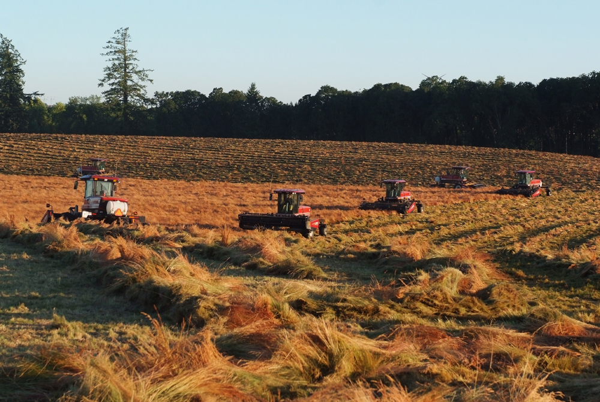

Century Farms in Oregon
The Century Farm program is an important way of preserving Oregon's rich agricultural history and heritage. This story map is intended to demonstrate Oregon's agricultural history.
Oregon's Agriculture
Oregon is a bountiful state.
Farming in Oregon
Oregon's Century Farm Program
Iwasaki Brothers, Inc.
The Iwasaki farm was originally founded in Hillsboro, OR in 1917 by Yasukichi (Billy) Iwasaki, an immigrant from Japan. The farm began as a dairy farm, but in 1928 Billy built his first greenhouse, branching out the farm into bedding plants and other crops.
Billy and his family were sent to Japanese internment camps from 1942-1945. After the war, the Iwasakis returned to their farm as one of the few Japanese-American families to return to Washington County.
The farm is now currently run by the grandson of Yasukichi, Jim Iwasaki. The farm now focuses primarily on wholesale starter plants, as well as holiday wreaths. Jim's daughters are the 4th generation of Iwasakis to keep the farm in the family. Information and photos from Iwasaki Brothers, Inc.
The Mosby Farm
Originally founded in 1852 by David and Isabelle Mosby as a grain and hay farm, the Mosby Farm is now a small-scale beef operation.
David Mosby arrived in Oregon in 1850 and laid claim to a parcel of land which he established as a farm. Originally, it was a subsistence farm, with additional income earned through the raising and sale of hogs, beef cattle, and timber.
Currently, the farm runs 100 cow/calf pairs and harvests winter hay when it's available. Video courtesy of the Register-Guard
Jesse and Ruby Looney Farm
As members of the first wagon train of settlers to Oregon, led by Dr. Marcus Whitman (pictured below), Jesse and Ruby Looney arrived in the Oregon Territory in 1843.
Jesse Looney received his family's land grant in 1846 and quickly set about clearing the land to build the farm, using animal traction.
Originally a grain and dairy farm, after 173 years in operation, the farm now primarily produces grass seed and produce, as well as hosting a purebread Hereford cattle herd.
The farm is currently run by Smith Cox, the 6th generation of the family.

Smith Bros Farm, LLC.
Originally founded by John and Sara McCoy in 1853 as members of a wagon train coming to Oregon.
The farm passed down through generations to become the current 180 acres that can be seen today.
Early on, the farm was multi-faceted: many varieties of grains and cereals were farmed, alongside sheep and dairy cattle.
Today, the farm is well-known for its grass seed, like many other farms in Oregon 